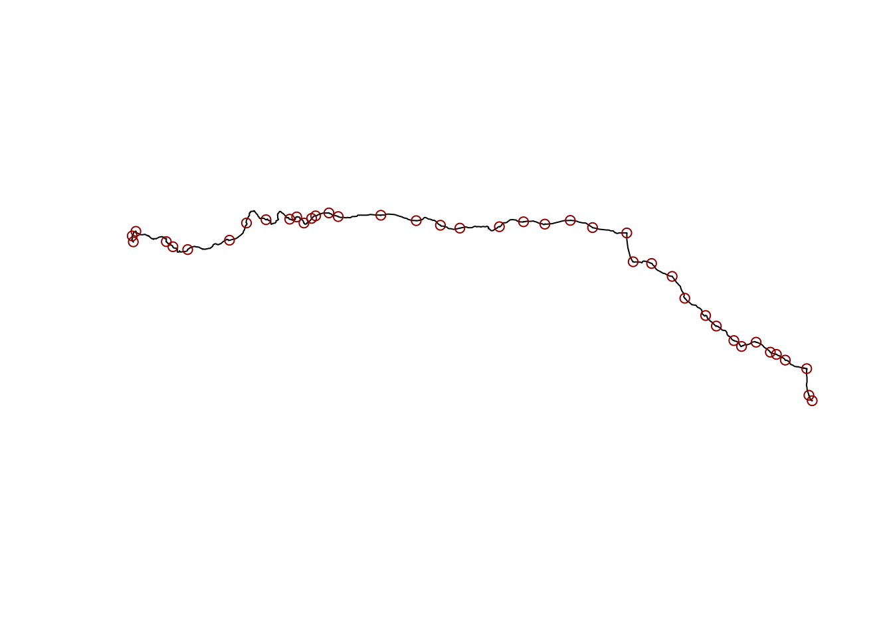

The Empire Builder is a train that travel from Chicago to Seattle (or Portland). I was lucky to take it few years ago, never get time to blog about it, but recently David Lawrence Miller made a really nice mastodon thread about it that nudged me to slowly collect back my notes and do this little post and spread more Amtrack love (or just train travel)!
It takes two days and a half to do the trip. At that time you did not have WIFI (is it still the case?), perfect to relax with books, a computer and all the man pages that you never fully read or simply go to the scenic wagon to be amazed by the badlands, the Mississippi river, Montana’s moutains and a huge sample of a lot of backyards in this part of America.
We were lucky to get a really good price on the small private “cabine”. If you can get one I highly recommend it. My only regret is that we did not know that you can take an Amtrack pass that allow you to stop somewhere and board on other next trains.
I think it is a great way to discover a part of the US. I will try to do a bit of data analysis, visualization and share some pictures displaying the various landscapes and experiences you can get.
Nothing fancy, just some numbers and maps using good ol´base R.
Amtrack: track and stations
The fist step is to get the stops and the path that the train uses. I went with OpenStreetMap (OSM) because OSM contributors are awesome and I trust their data.
If you explore a bit OSM, you can find the OSM’s relation for the Empire Builder - Chicago to Seattle Here. I went with a classic overpass turbo query. You need all the node and maybe way that are with that relation. I also wrote a bit about overpass. I used the export option from overpass since I failed to reproduce the export with [osmtogeojson](https://github.com/tyrasd/osmtogeojson) (OSM json uses an other way to represent data that geojson).
We have now a geometry collection with points and a multilinestring. I usually prefer to keep one geometry type per layer. I will split stations and the train track then put then in list, basically rebuilding a geometry collection but with a structure that I like. I will also remove some duplicated informations.
library(sf)
Linking to GEOS 3.12.1, GDAL 3.8.4, PROJ 9.4.0; sf_use_s2() is TRUE
path <-"data/raw.geojson"read_wrangle <-function(path_geosjon) { empire_raw <- sf::st_read(path_geosjon, quiet =TRUE)# X columns are duplicated, remove them empire_raw$X.id <-NULL empire_raw$X.relations <-NULL# store in list empire <-list(track = empire_raw[1,],stations = empire_raw[-1,] )message(sprintf("CRS is %s", sf::st_crs(empire_raw)$input))return(empire)} empire <-read_wrangle(path)
CRS is WGS 84
First map of the train line and its stations
I like doing a quick map first:
plot(empire$track$geometry) # plot the lineplot(empire$stations$geometry # plot each stops , col ="darkred" , add =TRUE)

This is not the greatest map but I like how it could look like a transect. Biogeographers since long time ago1 used transect and I think it is an underused way of sampling!
I don’t have any experience with US official data so it was also interesting to try them. Of course I could have also used OSM data (download .pbf store everything in a quick Postgres/Postgis DB and play with it) and used my previous experience with it in other countries but starting with official data is a bit less voluminous and are usually already organized in layers.
[TODO give the link of the data provider]
I downloaded way too much data here (some looks really interesting!) but for a background map I will just start with each states border:
```r states_border # a list of every states crossed states_list <- c(“Idaho”, “Illinois”, “North Dakota”, “Minnesota”, “Montana”, “Washington”, “Wisconsin”)
loading few “States or Territory” every state has his bordering states
state <- sf::read_sf(“data/data_raw/GU_StateOrTerritory.shp”) WI_states <-sf::read_sf(“data/data_raw/WI_GU_StateOrTerritory.shp”) ND_states <- sf::read_sf(“data/data_raw/ND_GU_StateOrTerritory.shp”)
### Improved a bit our Map
We will have to use the same CRS. I decided to keep the one provided with official data, hoping they picked the best one.
```r map_with_stater_border
# transfom with eb_states CRS
rail.shp <- sf::st_transform(rail.shp, st_crs(eb_states))
stations.shp <- sf::st_transform(stations.shp, st_crs(eb_states))
plot(eb_states$geometry, border = "grey")
plot(rail.shp$geometry, add = TRUE)
plot(stations.shp$geometry
, col = "darkred"
, add = TRUE)
This is a bit better but it will require a bit more tuning later.
Counties and some demographics
I feel this trip provided me with a lot of insight of what is the “backyard of America” (I stole that from one of the other passenger). But I wanted to see if I can get a bit more with basic counties’s data ? (I was inspired by [TODO link] carreyage but I will probably need mor time to (1) understand where does this data cone from and (2) find a smaller administrative unit).
r empire_builder_counties # loading counties 2018 TODO see what is 500k counties_raw <- sf::read_sf("data/data_raw/cb_2018_us_county_500k/cb_2018_us_county_500k.shp") # only keep the one on the Empire Builder eb_counties <- counties_raw[rail.shp,] plot(eb_counties$geometry)
The Empire Builder is crossing 7 States and 61 counties.
## Adding a bit more to it
It look like `GEOID` is `State_FIPS` + `COUNTYFP` (and if COUNTYFP has only two digit you need to add 0).
```r adding_census}
## loading data
counties_data <- read.csv("data/data_raw/co-est2019-alldata.csv")
# without metadata I am lost so I just keep basic columns
small_counties_data <- counties_data[,c("STATE", "COUNTY", "CTYNAME", "POPESTIMATE2019", "CENSUS2010POP")]
# I need GEOID to merge to spatial data
small_counties_data$GEOID <- (small_counties_data$STATE * 1000) + small_counties_data$COUNTY
# keeping only the counties crossed by the Empire Builder
eb_counties_data <- small_counties_data[small_counties_data$GEOID %in% eb_counties.df$GEOID, ]
# merging with spatial data
eb_counties <- merge(eb_counties, eb_counties_data, by.x = "GEOID", by.y = "GEOID")
# Census need to be density so we can compare them
# units in this CRS was meter, so area are in square n then transform km2
eb_counties$area_km2 <- as.numeric(st_area(eb_counties)/1000000)
# density
eb_counties$density_hab_km2 <- eb_counties$CENSUS2010POP/eb_counties$area_km2
plot(eb_counties["density_hab_km2"])
Amtrack!
Relations with network=“Amtrack”
The First step is collecting data about Amtrack. I went with a query that get all relations. A csv file with the relation id and name but without coordinates was enough because at first we just want to pinpoint the relation that we need without downloading too much from the server.
I have tuned the request in overpass turbo then used cURL.
I moved the csv in the data/ repertory.
Cleaning the csv
relations_amtrack <-read.csv("../Data/relation_amtrack.csv", sep ="\t")# we can drop relation and clean namesnames(relations_amtrack) <-c("rel", "id", "name")relations_amtrack <- relations_amtrack[, c("id", "name")]
We just need the one with = in their name: “Amtrak Wolverine: Pontiac => Chicago”
we have potential duplicates: see Amtrak Keystone Service: Harrisburg => Philadelphia
we have two way: see Seattle => Chicago and Chicago => Seattle
We need to understand why we have duplicates.
Identify one track that get all the informations
Let see how many distinct name we get:
unique_track <-aggregate(data = relations_amtrack, id ~ name,FUN =function(x) length(unique(x)))unique_track[order(unique_track$id, decreasing =TRUE),]sum( unique_track$id >1 ) # number of track that have more than one relation
For each relation we will construct a query that just ask the number of elements linked to that relations. This creates a bunch of files but I failed to understand how the statistical count works in overpass APi.